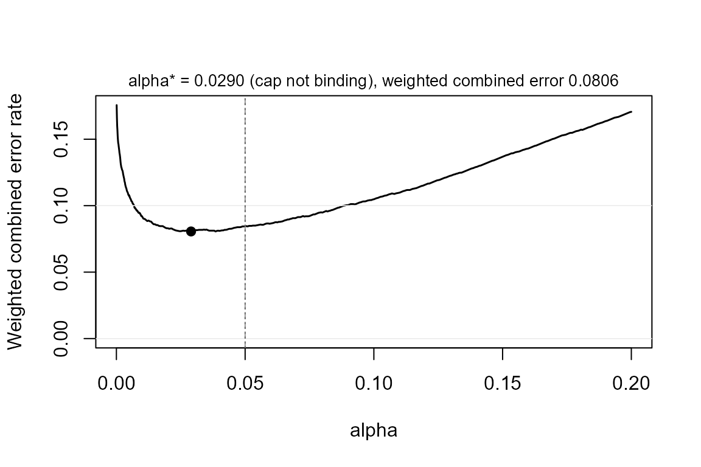

Justifying the error rate: alpha by sample size, or by error costs
Source:vignettes/justified-alpha.Rmd
justified-alpha.RmdThe default, and the argument
Every claim in powerape is tested at alpha = 0.05 in the
form its literature uses: detection is the two-sided test read off the
95% interval, the minimum-effect claim a one-sided test and equivalence
a TOST, both read off the 90% interval. The level is an argument of
every power function, so a stricter convention is one keyword away:
library(powerape)
d <- ape_dgp(model = "probit",
focal = pa_var("program", "binary", p = 0.5),
covariates = list(pa_var("z", "normal")),
baseline = 0.30, signal = 0.10)
d <- set_ape(d, target = 0.10)
ape_power(d, n = 2000, claim = "minimum", sesoi = 0.05, nsim = 400, seed = 1)
#> powerape -- minimum-effect claim (CI lower bound > 0.050)
#> probit, n = 2000, assumed true APE +0.1000, 90% CI (alpha = 0.05), nsim = 400
#> power = 0.787 (MCSE 0.020)
#> outcomes: minimum 0.787 | detect-only 0.212 | inconclusive 0.000 | equivalence 0.000 | failed 0.000
ape_power(d, n = 2000, claim = "minimum", sesoi = 0.05, alpha = 0.01,
nsim = 400, seed = 1)
#> powerape -- minimum-effect claim (CI lower bound > 0.050)
#> probit, n = 2000, assumed true APE +0.1000, 98% CI (alpha = 0.01), nsim = 400
#> power = 0.542 (MCSE 0.025)
#> outcomes: minimum 0.542 | detect-only 0.445 | inconclusive 0.012 | equivalence 0.000 | failed 0.000Maier and Lakens (2022) give two reasons not to stop at the default. First, with a fixed budget of observations the error rate that minimizes the combined cost of Type I and Type II errors is rarely exactly .05. Second, in large samples a p value just below .05 can be more likely under the null than under the alternative (Lindley’s paradox), so the level should fall as n grows. powerape supports both justifications.
Alpha as a function of the sample size
alpha may be a function of n. It is evaluated
at every candidate sample size, so ape_n() designs jointly
over the pair (alpha(n), n), and
ape_curve(), ape_mde(), and
ape_robust() use the level that belongs to their
n. Any rule works; the natural one for regression coefficients
is the Bayes-factor calibration of Wulff and Taylor (2024) in the alphaN
package, where BF = 1 is the largest level that avoids
Lindley’s paradox and BF = 3 asks a significant result to
carry moderate evidence.
rule <- function(n) alphaN::alphaN(n, BF = 3)
rule(c(500, 2000, 8000))
#> [1] 0.0037278668 0.0017468970 0.0008248697
ape_n(d, power = 0.80, claim = "minimum", sesoi = 0.05, alpha = rule,
nsim = 300, seed = 2, confirm = FALSE)
#> powerape required sample size -- minimum claim
#> n = 5191 for 80% target power (achieved 0.823, MCSE 0.022)
#> assumed true APE +0.1000, sesoi 0.050, 99.79% CI (alpha = 0.001042 by sample-size rule), probit
#> search: 1 step(s); confirm with ape_power() at a larger nsim.The requirement rises well above the fixed-.05 answer (about 2,100
for this design), because the level keeps tightening as the search moves
to larger n. The returned object stores the rule and the level
it produced at the chosen n, and power_statement()
says so.
pw_rule <- ape_power(d, n = 5000, claim = "minimum", sesoi = 0.05,
alpha = rule, nsim = 400, seed = 3)
pw_rule
#> powerape -- minimum-effect claim (CI lower bound > 0.050)
#> probit, n = 5000, assumed true APE +0.1000, 99.79% CI (alpha = 0.001063 by sample-size rule), nsim = 400
#> power = 0.790 (MCSE 0.020)
#> outcomes: minimum 0.790 | detect-only 0.210 | inconclusive 0.000 | equivalence 0.000 | failed 0.000
power_statement(pw_rule)
#> We conducted a simulation-based power analysis for the average partial effect
#> (APE) of program using the powerape package (version 1.11.0), following the
#> confidence-interval approach of Riesthuis (2024). The assumed data-generating
#> process was a probit model with focal variable program (binary, prevalence
#> 0.50); parametric covariates z (continuous, mean 0, SD 1), with the focal
#> variable and the covariates mutually independent; baseline outcome rate 0.300
#> with the focal at reference; nuisance covariates contribute a latent
#> pseudo-R-squared of 0.10. The assumed true APE was 0.100 (10.0 percentage
#> points). At a sample size of n = 5000, simulated power for the minimum-effect
#> claim (the 99.79% confidence interval's lower bound exceeding the smallest
#> effect size of interest, 0.050; a one-sided test at alpha = 0.106%, set as a
#> function of the sample size) was 0.790 (Monte Carlo SE 0.020; 400
#> replications). Across replications, the probability of concluding a
#> meaningful effect was 0.790, of detection without meaningfulness 0.210, of an
#> inconclusive result 0.000, and of equivalence 0.000. Estimation used maximum
#> likelihood with delta-method Wald confidence intervals; replications without
#> a maximum-likelihood estimate, from a failed fit or from separation (a focal
#> cell with no events or no non-events), counted against the claim (0.0% of
#> replications).Alpha from error costs
The second route is decision-theoretic. For a design with a fixed n, the weighted combined error rate
weighs a Type I error cost times as heavily as a Type II
error and the two hypotheses by their prior odds (Mudge et al., 2012).
powerape evaluates the whole curve from one simulation:
ape_power() keeps the estimate and standard error of every
replication, and power at any level is a re-threshold of those draws.
power_at() exposes the curve; ape_alpha()
minimizes or balances it.
pw <- ape_power(d, n = 2000, claim = "minimum", sesoi = 0.05,
nsim = 1000, seed = 4)
power_at(pw, alpha = c(0.005, 0.01, 0.025, 0.05, 0.10))
#> alpha conf power mcse minimum detect_only inconclusive equivalence
#> 1 0.005 0.99 0.485 0.01580427 0.485 0.498 0.017 0
#> 2 0.010 0.98 0.581 0.01560253 0.581 0.413 0.006 0
#> 3 0.025 0.95 0.696 0.01454593 0.696 0.301 0.003 0
#> 4 0.050 0.90 0.778 0.01314215 0.778 0.222 0.000 0
#> 5 0.100 0.80 0.876 0.01042228 0.876 0.124 0.000 0
#> failed
#> 1 0
#> 2 0
#> 3 0
#> 4 0
#> 5 0
ja <- ape_alpha(pw, cost = 4, prior = 1) # Cohen's 4:1 weighting
ja
#> powerape justified alpha -- minimum-effect claim (CI lower bound > 0.050), n = 2000, nsim = 1000
#> objective: minimize the weighted combined error rate (Type I cost x4, prior odds H1:H0 = 1)
#> alpha* = 0.0290 -> power 0.713 (MCSE 0.014), beta 0.287, weighted combined error 0.0806
#> at alpha = 0.05: power 0.778, weighted combined error 0.0844
#> flat range: alpha in [0.0190, 0.0460] is indistinguishable from the optimum at this nsim
#> cap 0.050 not binding (unconstrained optimum 0.0290)
plot(ja)
Two things to notice. The objective is flat around its optimum, so
the result reports the range of levels that cannot be told apart from
the optimum at this number of replications; that range, not the point,
is what to preregister unless nsim is large. And the search
is capped at .05: when the unconstrained optimum lies above the
conventional level, as it does for designs below their required
n with equal error costs, the function says so rather than
returning it, following Maier and Lakens’s advice that raising alpha
needs a justification of its own and that journals may accept only
lowering.
ape_alpha(pw, cost = 1, prior = 1)
#> powerape justified alpha -- minimum-effect claim (CI lower bound > 0.050), n = 2000, nsim = 1000
#> objective: minimize the weighted combined error rate (Type I cost x1, prior odds H1:H0 = 1)
#> alpha* = 0.0500 -> power 0.778 (MCSE 0.013), beta 0.222, weighted combined error 0.1360
#> at alpha = 0.05: power 0.778, weighted combined error 0.1360
#> flat range: alpha in [0.0400, 0.0500] is indistinguishable from the optimum at this nsim
#> cap 0.050 BINDS: unconstrained optimum alpha = 0.1165 (weighted combined error 0.1082);
#> raising alpha above the conventional level needs its own justification (Maier & Lakens, 2022).Balancing instead of minimizing asks for
cost * alpha = prior * beta; at a design’s required
n for 80% power, Cohen’s 4:1 weighting returns the familiar
.05/.20 pair by construction.
The frontier level: one alpha for a whole MDE grid
ape_alpha() needs a pinned effect, because its Type II
error is one minus power at the planning value. In a
minimum-detectable-effect analysis the effect is the answer, not an
input, and re-optimizing the level at every candidate effect chases a
moving target. The way out is a fixed point: the level that is optimal
for the effect that is just detectable at the target power.
Under the normal approximation that first-order condition loses both
n and the standard error, so one level prices every sample
size, and alpha_frontier() returns it in closed form.
alpha_frontier(cost = 4, power = 0.80) # two-sided, 0.0274
#> [1] 0.02737173
alpha_frontier(cost = 1, power = 0.80, claim = "minimum") # exactly 1 - power
#> [1] 0.2Passing it as alpha re-prices an MDE analysis (or a grid
of them) under the justified level:
ape_mde(d, n = 3000, claim = "detect",
alpha = alpha_frontier(cost = 4, power = 0.80), seed = 6)At equal costs the one-sided frontier level is exactly
1 - power – the frontier is where alpha and beta balance.
Unlike ape_alpha(), the frontier level is an approximation
(normal, and pinned to the just-detectable effect) and carries no .05
cap, so treat levels above the convention with the same caution as an
uncapped ape_alpha() optimum.
Checking the size, and reporting
Because the Type I error of a SESOI claim is its size at the claim
boundary, size = TRUE simulates the world in which the true
effect equals the SESOI and reports the realized error rate at the
chosen level, something analytic compromise-power tools cannot do. On
the standard routes it matches the nominal level within Monte Carlo
error; on clustered panels with few units it may not, and then the
realized number is the one to report.
ja4 <- ape_alpha(pw, cost = 4, prior = 1, size = TRUE, nsim_size = 500,
seed = 5)
ja4
#> powerape justified alpha -- minimum-effect claim (CI lower bound > 0.050), n = 2000, nsim = 1000
#> objective: minimize the weighted combined error rate (Type I cost x4, prior odds H1:H0 = 1)
#> alpha* = 0.0290 -> power 0.713 (MCSE 0.014), beta 0.287, weighted combined error 0.0806
#> at alpha = 0.05: power 0.778, weighted combined error 0.0844
#> flat range: alpha in [0.0190, 0.0460] is indistinguishable from the optimum at this nsim
#> cap 0.050 not binding (unconstrained optimum 0.0290)
#> realized size at the claim boundary (true APE = 0.050): 0.0240 (MCSE 0.0068, nsim 500)
power_statement(ja4)
#> We chose the error rate for the minimum-effect claim (the 94.2% confidence
#> interval's lower bound exceeding the smallest effect size of interest, 0.050;
#> a one-sided test at alpha = 2.9%) by minimizing the weighted combined Type I
#> and Type II error rate (Maier & Lakens, 2022; Mudge et al., 2012), weighting
#> a Type I error 4 times a Type II error and taking prior odds of 1 for the
#> planning value (APE = 0.100) against the claim boundary, using the powerape
#> package (version 1.11.0). The assumed data-generating process was a probit
#> model with focal variable program (binary, prevalence 0.50); parametric
#> covariates z (continuous, mean 0, SD 1), with the focal variable and the
#> covariates mutually independent; baseline outcome rate 0.300 with the focal
#> at reference; nuisance covariates contribute a latent pseudo-R-squared of
#> 0.10. At n = 2000 the optimum within the conventional cap of alpha = 0.05 was
#> alpha = 0.0290: simulated power 0.713 (Monte Carlo SE 0.014; 1000
#> replications), a Type II error rate of 0.287, and a weighted combined error
#> rate of 0.0806 versus 0.0844 at alpha = 0.05; error rates between 0.0190 and
#> 0.0460 are indistinguishable from the optimum at this precision. A
#> verification simulation at the claim boundary (true APE = 0.050; 500
#> replications) gave a realized error rate of 0.0240 (Monte Carlo SE 0.0068) at
#> the chosen alpha.The statement names the objective, the weights, the level, the flat range, the cap, and the verification, ready for a preregistration.
References
Maier, M., & Lakens, D. (2022). Justify your alpha: A primer on two practical approaches. Advances in Methods and Practices in Psychological Science, 5(2).
Mudge, J. F., Baker, L. F., Edge, C. B., & Houlahan, J. E. (2012). Setting an optimal alpha that minimizes errors in null hypothesis significance tests. PLOS ONE, 7(2), e32734.
Wulff, J. N., & Taylor, L. (2024). How and why alpha should depend on sample size: A Bayesian-frequentist compromise for significance testing. Strategic Organization, 22(3), 550–581.